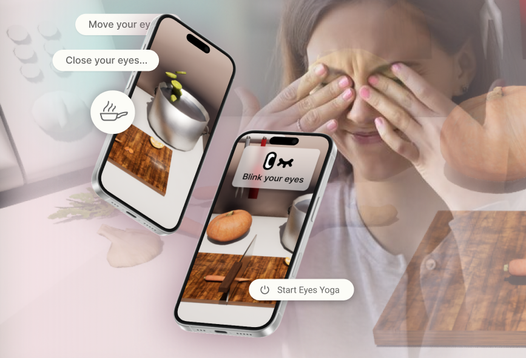
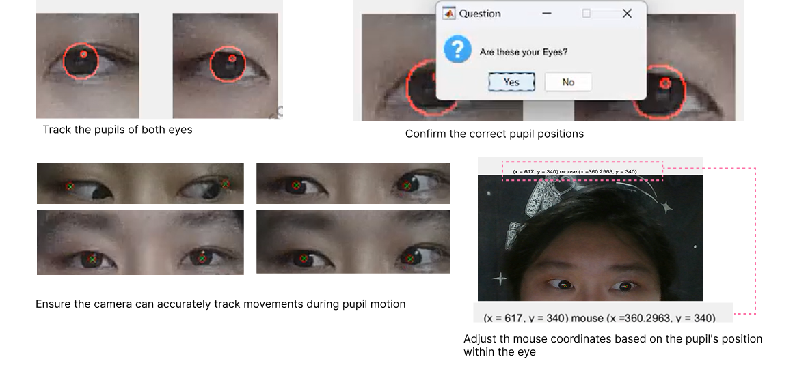
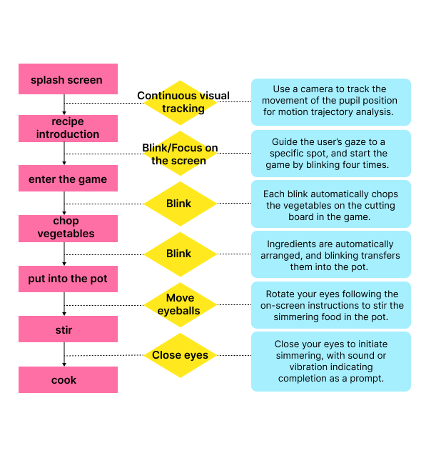

Computer Vision · Alternative Interaction
GazeCook
A webcam-based cooking game that turns gaze, blinking, and eye closure into simple interactions for guided eye exercise.

Challenge
Eye movement is expressive but noisy. A usable interaction needs to feel learnable even when tracking is imperfect.
The design therefore uses a small vocabulary of distinct actions instead of treating gaze as a precise replacement for a mouse.
Gaze movement
Controls continuous actions such as cursor movement or stirring direction.
Blink
Acts as a discrete trigger for confirming, cutting, or advancing.
Eye closure
Supports pausing or completing a timed exercise step.
Prototype
The proof of concept connects webcam tracking with a cooking-game interface so each eye exercise produces visible progress.
My implementation work covered pupil tracking, coordinate mapping, interaction rules, and integration with the game prototype.

How it works
The pipeline estimates eye features, normalizes them into stable signals, and maps those signals to a limited set of game actions.

Outcome & limitations
The prototype demonstrated a compact interaction vocabulary for turning basic eye behavior into game actions.
Lighting changes, head motion, tracking drift, and false blink triggers remain central limitations. A next iteration should add per-user calibration and test whether the mappings remain comfortable and understandable over repeated sessions.
